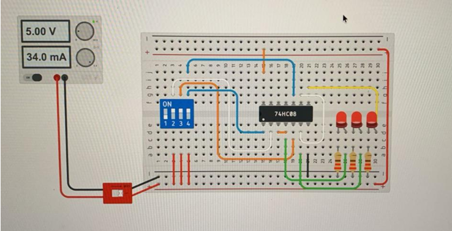
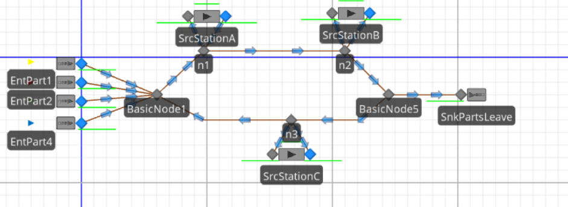

Creo en las personas, en el trabajo bien hecho y en construir relaciones basadas en confianza, respeto y empatía.
Mi enfoque profesional está orientado al área empresarial y a la agilización de procesos. Como futuro Ingeniero Industrial, busco destacar en la optimización de operaciones, la mejora continua y la creación de soluciones eficientes que aporten valor tanto a las organizaciones como a las personas.

Mi marca personal: liderazgo humano con visión estratégica.
A lo largo de mi formación y de las experiencias que he tenido trabajando con otras personas, he descubierto que mi forma de liderar nace desde la empatía y la organización. Me considero alguien cercano, responsable y comprometido, capaz de mantener la calma bajo presión y de trabajar buscando siempre soluciones eficientes y humanas.
Mis arquetipos de marca son el Cuidador y el Gobernante. El Cuidador se refleja en mi capacidad de escuchar, apoyar y construir relaciones de confianza. El Gobernante representa mi disciplina, visión estratégica y orientación a resultados, especialmente en entornos relacionados con procesos, liderazgo y toma de decisiones.
Mi objetivo profesional es crecer en áreas empresariales, financieras y de optimización de procesos, desarrollando proyectos que aporten valor real a las organizaciones y a las personas que forman parte de ellas.
Habilidades
- Comunicación empática
- Trabajo en equipo
- Liderazgo responsable
- Organización y planificación
- Análisis de procesos
- Resolución de problemas
Fortalezas
- Empatía genuina
- Responsabilidad
- Disciplina
- Lealtad
- Adaptabilidad
- Pensamiento estratégico
Presentación profesional
A continuación presento un video donde comparto mi visión profesional, mis intereses y la forma en la que busco aportar valor dentro de un equipo y una organización.
Currículum Vitae
David Pardo
Estudiante de Ingeniería Industrial con interés en liderazgo estratégico, optimización de procesos, gestión empresarial y finanzas. Experiencia en ventas, control de inventario y participación en proyectos técnicos y de simulación.
Idiomas: Español e Inglés
Descargar CVProyectos destacados
Estos proyectos representan algunas de las áreas en las que he desarrollado habilidades técnicas, analíticas y de liderazgo durante mi formación académica.

Simulación de Planta de Tratamiento de Agua
Proyecto desarrollado en Tinkercad enfocado en la simulación de un proceso industrial simplificado de tratamiento de agua. Se implementó lógica de control utilizando compuertas lógicas, LEDs, resistencias y simulación electrónica para representar válvulas, sensores, mixers y sistemas de emergencia.
Herramientas utilizadas: Tinkercad, lógica digital, simulación electrónica y análisis de circuitos.

Simulación de Procesos con SIMIO
Proyecto de simulación enfocado en analizar tiempos de atención y comportamiento de clientes en un sistema real. Se utilizaron distribuciones estadísticas, Input Analyzer y modelado en SIMIO para detectar oportunidades de mejora y optimización operativa.
Herramientas utilizadas: SIMIO, Input Analyzer, análisis estadístico y simulación de procesos.
Mesa Redonda sobre Derechos Humanos
Participación en una mesa redonda enfocada en el análisis del Acuerdo Global sobre Derechos Humanos en Guatemala. El proyecto fortaleció habilidades de comunicación, pensamiento crítico, argumentación y trabajo colaborativo.
Áreas desarrolladas: investigación, exposición oral, análisis social y debate.
Construyendo una marca profesional basada en liderazgo, estrategia y empatía
Mi marca personal se construye a partir de una idea simple: crecer profesionalmente sin dejar de ser humano. Creo que el liderazgo no se trata únicamente de dirigir o alcanzar resultados, sino también de generar confianza, aportar estabilidad y construir relaciones sólidas dentro de cualquier equipo u organización.
Actualmente estudio Ingeniería Industrial en la Universidad del Valle de Guatemala . A lo largo de mi formación he descubierto un fuerte interés por el área empresarial, la optimización de procesos y la toma de decisiones estratégicas. Me motiva trabajar en proyectos donde pueda combinar organización, análisis y liderazgo para generar soluciones eficientes y sostenibles.
Además de mi formación académica, experiencias en ventas, control de inventario y participación en proyectos técnicos me han permitido desarrollar habilidades relacionadas con comunicación, responsabilidad y adaptación a distintos entornos de trabajo. También he aprendido la importancia de mantener la calma bajo presión y de escuchar diferentes perspectivas antes de tomar decisiones.
Dentro de mis metas profesionales está continuar fortaleciendo mi perfil con una visión estratégica y financiera. Por ello, al finalizar mi carrera me gustaría estudiar una maestría en Finanzas , ya que considero que el conocimiento financiero complementa de forma importante la gestión empresarial y la capacidad de liderar proyectos de alto impacto.
También considero fundamental mantener un enfoque humano en cada proyecto. Más allá de los resultados, me interesa construir relaciones basadas en respeto, empatía y compromiso. Quiero que las personas me perciban como alguien confiable, disciplinado y capaz de aportar valor tanto a nivel profesional como personal.
En el futuro, me gustaría desarrollarme en áreas relacionadas con liderazgo estratégico, mejora de procesos y gestión empresarial, siempre buscando crecer constantemente y generar un impacto positivo en las organizaciones donde participe.
Contacto profesional
Estoy abierto a nuevas oportunidades, proyectos y colaboraciones donde pueda aportar liderazgo, organización y visión estratégica.
Correo:
pardodavid01gt@gmail.com
LinkedIn:
www.linkedin.com/in/david-pardo01
Teléfono:
+(502) 4904-6767
Ubicación:
Guatemala, Guatemala